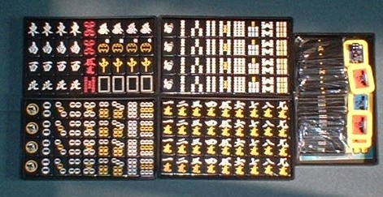
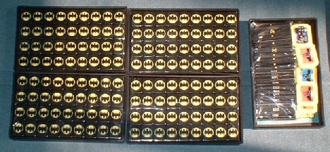
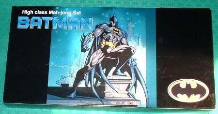
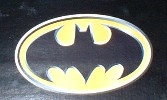
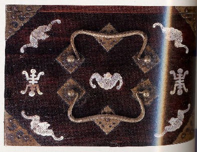
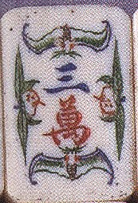

アメリカンコミックのヒーロー、バットマンをキャラクターにした変わり種牌。数年前に販売が開始されたモノであるが、いまでもオークションで検索すれば１．５万〜２万円くらいで販売されている。

腕が悪いせいで、うまく写っていない。そこでどこが変わり種か判りにくいが、筒子の丸の中は、トレードマークのコウモリ。特に１筒にはバットマン、１索にはロビンの顔があしらってある。あと予備牌の４枚には、バットマンのトレードマークであるコウモリがあしらってある。
中国におけるオーソドックスな牌の組み合わせは、万・筒・索・字牌の34種類に花牌２座（春夏秋冬・梅蘭菊竹の８枚）Ｘ４の144枚。しかし日本麻雀では花牌を使用しなかった。そこで日本麻雀では花牌は１座のみ残し（ほとんど春夏秋冬）、梅蘭菊竹の４枚は何も彫らないで予備牌とした。
昔は麻雀牌が高価だったため、１枚の紛失で買い換えるわけに行かない。そこで紛失牌が出たときは、この予備牌に紛失牌を彫り、再使用するようにした。しかしいまでは型枠で作る合成樹脂牌（普通、練り牌と呼称する）全盛となり、牌もずいぶん廉価になった。とうぜん彫り師そのものも存在しなくなった。そこで紛失牌が発生した場合、すぐ新品に買い換える事が多い。んなわけで予備牌は無用の長物と化し、このような変わり牌となった。
背側にはすべて、やはりトレードマークであるコウモリが彫ってある。しかしこの模様は、あまり感心しない。無いほうがずっといい。

というのは、以前にやはり裏側に模様がある牌を実際にプレーしたが、目がチラついて非常に使いにくかった。麻雀とは全然関係ない模様でもそうであったから、こんな筒子に似た模様では、よけいに目がチラつくと思う。しかしパッケージは恰好いい。

とまぁこいだけの牌であるが、実はこの牌を購入したのはつい最近。と云っても、最近になって、この牌が販売されていたことを知ったわけではない。発売当初から知ってはいたが、ずっと購入する気にならなかっただけである。
「麻雀」とあればチラシにも反応するσ(-_-)にしては珍しいが、それなりのワケがある。それは、バットマンのトレードマークである、このコウモリの絵。

みんなにはコレが夜空に浮かぶコウモリに見えるんだろうけれど、σ(-_-)には子供が大口開けて笑っているようにしか見えない。真ん中の黒い部分は口の中で、上からぶら下がっているのが、二つのノドチンコ。（笑） 恰好いいどころか、なんだかバカにされてるような気がする。(^-^；
しかし先般、オークションに出ていたこのバットマン牌を何気なく見ていたとき、出品者の「それにしても、なぜバットマンなんでしょう？」というコメントをみた。それでハッと思うことがあって、慌てて購入した。
というのは、実はコウモリは、中国において麻雀の重要なキャラクターなのである。
このサイトのどこかのページでも書いたことだが、コウモリは漢字で「蝙蝠」と書く。中国語で読めば「ピェンフー」という感じ。これは「偏富（ピェンフー＝金が集まる）」と音通する。中国において麻雀は完全なジャンブル。そこで麻雀で勝ち、金が集まることを願って、収納箱や麻雀牌に蝙蝠の図柄をあしらったりする。


もちろんバットマン牌の製造販売業者は、ただ「バットマークを筒子にあしらうと収まりが良い＝バットマンは恰好いい＝たくさん売れるだろう」ぐらいの理由で、バットマンをモチーフにしたのであろう。それが結果的に中国のコウモリキャラクターと合致したわけである。そういう点で面白いと思って、慌てて購入した次第。（笑）
|